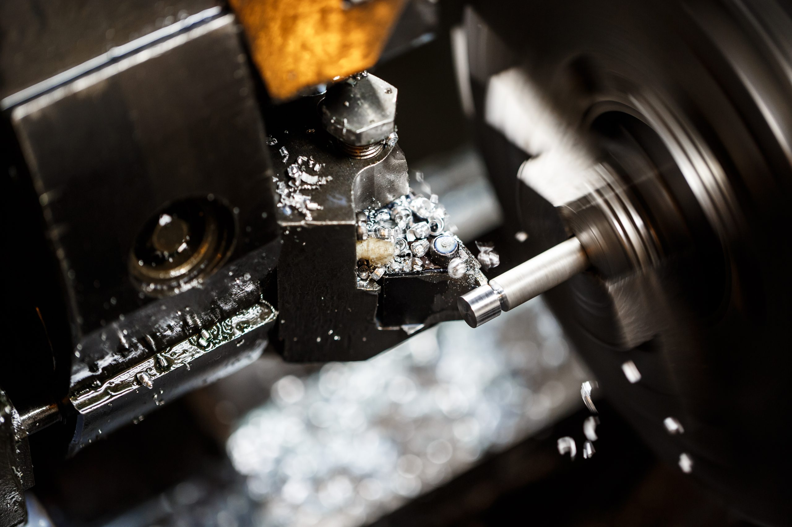

Nuestro taller

Un taller preparado para cualquier reto
Disponemos de maquinaria de última generación: tornos CNC CMZ, fresadora CNC Haas y equipos complementarios que nos permiten abordar proyectos de cualquier complejidad.